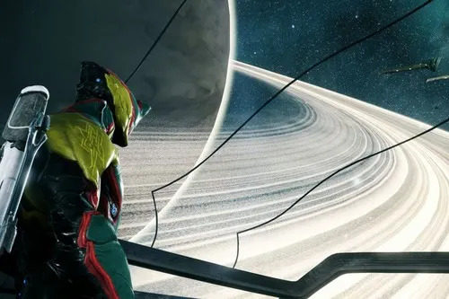
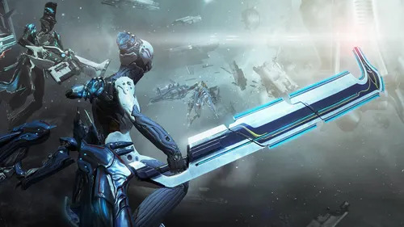

Al mando
Quien pilota maniobra, apunta la nave y decide cómo aproximarse a los objetivos.

Pilota el Railjack, despliega el Archwing y participa en misiones que llevan el combate de Warframe al espacio profundo.
El contenido espacial de Warframe combina dos experiencias distintas: las misiones de Railjack, centradas en una nave de combate y su tripulación, y las actividades de Archwing, donde vuelas con un exotraje individual. En algunas misiones puedes alternar entre la nave, el Archwing y objetivos a pie.
El Railjack es una nave de asalto que pilotas en las regiones Proxima del mapa estelar. En una misión, el equipo puede ocuparse de pilotar, manejar las torretas, reparar averías, fabricar suministros a bordo o salir al espacio para cumplir objetivos fuera de la nave.
Las misiones suelen combinar combates contra cazas y naves de transporte con objetivos adicionales. Según la misión, también habrá que infiltrarse en una instalación, desactivar defensas o completar una sección a pie antes de regresar al Railjack.
Quien pilota maniobra, apunta la nave y decide cómo aproximarse a los objetivos.
La tripulación usa las torretas, atiende daños y mantiene operativos los sistemas.
El Archwing permite desplazarse por el espacio y abordar ciertos objetivos.
El Archwing es un equipo de vuelo que se acopla al Warframe y permite moverse en entornos de gravedad cero. Tiene sus propios controles, armas y piezas de equipo. En Railjack, sirve para salir de la nave, desplazarte entre objetivos y entrar en algunas instalaciones.
También hay misiones de Archwing independientes, seleccionables desde el mapa estelar. No son lo mismo que una misión de Railjack: en ellas tu personaje vuela con el Archwing y no pilotas una nave grande. En las zonas abiertas, el Archwing puede usarse para recorrer el paisaje cuando ya tienes el lanzador correspondiente.
La aventura «El Archwing» introduce este equipo y te guía para conseguir tu primer modelo. Para desplegarlo en zonas abiertas necesitas el segmento de lanzador, cuya investigación se realiza en el Laboratorio Tenno de un Clan, y fabricar también el lanzador en la Fundición.

Las misiones de Railjack se agrupan por regiones Proxima, que se desbloquean progresando por el mapa estelar. Cada región ofrece nodos con objetivos y niveles distintos. Al seleccionar una misión, revisa los requisitos y las recompensas para saber qué encontrarás.
Enfréntate a fuerzas espaciales y completa los objetivos principales del nodo.
Abandona la nave para infiltrarte, sabotear sistemas o cumplir una tarea en el interior.
Abre reliquias del Vacío durante misiones Railjack y consigue recompensas de fisura.
Vuela con tu exotraje en nodos espaciales diseñados para el combate individual o en escuadra.
El Railjack tiene componentes que determinan su resistencia, velocidad, energía y capacidades de combate. También puedes instalar armas y mejoras tácticas. El Plexus es el sistema de configuración que lleva el jugador y permite preparar mejoras para usar a bordo; revisa su capacidad y adapta la configuración al papel que quieras cumplir.
El Archwing utiliza su propio conjunto de equipo, con armas y componentes especializados. Mejorar tanto la nave como el exotraje facilita enfrentarse a enemigos más resistentes, pero no necesitas tener una configuración perfecta para aprender las misiones iniciales.
Puedes jugar con otras personas o añadir miembros de tripulación controlados por el juego. Los tripulantes pueden ayudar a pilotar, atender torretas o reparar el Railjack, según cómo los asignes. La habilidad de Mando dentro de los Intrínsecos desbloquea opciones relacionadas con la tripulación.
En una escuadra, coordinar las tareas hace que las misiones fluyan mejor: una persona puede mantener la nave en movimiento mientras otra se ocupa de una reparación o sale en Archwing. Si juegas en solitario, configura la tripulación para cubrir las tareas que no puedes atender al mismo tiempo.
Los Intrínsecos son categorías de progreso que mejoran las habilidades del jugador durante las misiones Railjack. Sus ramas principales son:
Los puntos se obtienen jugando misiones y se invierten en la rama que prefieras. Mejorar varias áreas de forma gradual ayuda a participar en más tareas y a adaptarte cuando una misión cambia de ritmo.
No hace falta dominarlo todo en la primera misión. Empieza aprendiendo a pilotar y a reparar; después puedes especializar tus Intrínsecos y optimizar la configuración del Railjack.
Railjack: misión espacial en la que el centro de la actividad es una nave que pilotas y mejoras.
Archwing: equipo de vuelo individual; puede protagonizar misiones propias o usarse durante ciertos objetivos Railjack.
Mapa estelar: desde aquí eliges los nodos de misión, incluidas las regiones Proxima y las misiones de Archwing disponibles.